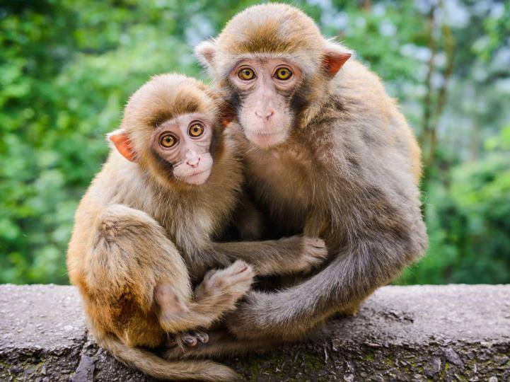

Маймыл
Маймыл – приматтар отрядына жататын ең жоғарғы сатыдағы сүтқоректі. Маймылдар және адам тәрізді маймылдар отряд тармағын құрайды. Бұлар 2 топқа бөлінеді. Кеңтанаулы маймылдар Оңтүстік және Орталық Американы, ал тартанаулы маймылдар Азия мен Африканы мекендейді. Құрылысы, тегі жөнінен адамға тар танаулы маймылдар жақын. Бұларға гиббон, шимпанзе, орангутан, горилла жатады. Олардың дене тұрқы 15 см-ден (ергежейлі игрунка) 2 м-ге (горилла), салмағы 400 г-нан (игрунка) 180 кг-ға дейін болады. Маймылдардың көпшілігі (жерде жүретін павиан, горилладан басқалары) ағашқа өрмелеп, бұтақтан бұтаққа секіріп, ағаш басында тіршілік етеді, сондықтан бас бармағы, үлкен башайы қалған саусақтарына қарама-қарсы біткен. Орманды, орманды таулы жерлерде мекендеуіне байланысты көру, есту қабілеттері жақсы жетілген, иіс сезімі нашар дамыған. Маймылдар миының көлемі, салмағы, даму дәрежесі жөнінен басқа сүтқоректі жануарлар арасында жоғары сатыда. Жоғарғы сатыдағы маймыл тәрізділер таяқты, тасты, т.б. қорегін алуға, жауынан қорғануға құрал ретінде пайдалана алады. Маймылдардың көптеген мінез-құлқы (ренжу, қуану, т.б.) – адамның мінез-құлығына ұқсас. Маймылдар өздері мекендейтін аумақтарын белгілеп, сол жерде топтасып өмір сүреді. Көбіне ағаш бұтағы арасына бұтақты иіп күрке салып түнейді. Қорегі – өсімдік жемісі, жапырағы, гүлі, тамыр жемісі, жәндіктер, сирек те болса жәндікқоректілер. 4 – 10 ай көтеріп 1, өте сирек жағдайда 2 – 3 ұрпақ әкеледі. Адамдар маймылдарды аулайды, хайуанаттар парктеріне, үйде ұстауға сатады. Африка мен Азия тұрғындары етін жейді, терісінен түрлі бұйымдар жасайды. Қазіргі кезде маймылдар Азия, Африка, Американың тропиктік және субтропиктік аймақтарында, Зонд архипелагы мен Филиппинде тараған. 200-ге жуық түрі белгілі. Олардың 62 түрі мен тармағы қорғауға алынып, Халықаралық табиғат қорғау қоғамының “Қызыл кітабына” енгізілген. Қазақстанда хайуанаттар саябағында ұсталады.
